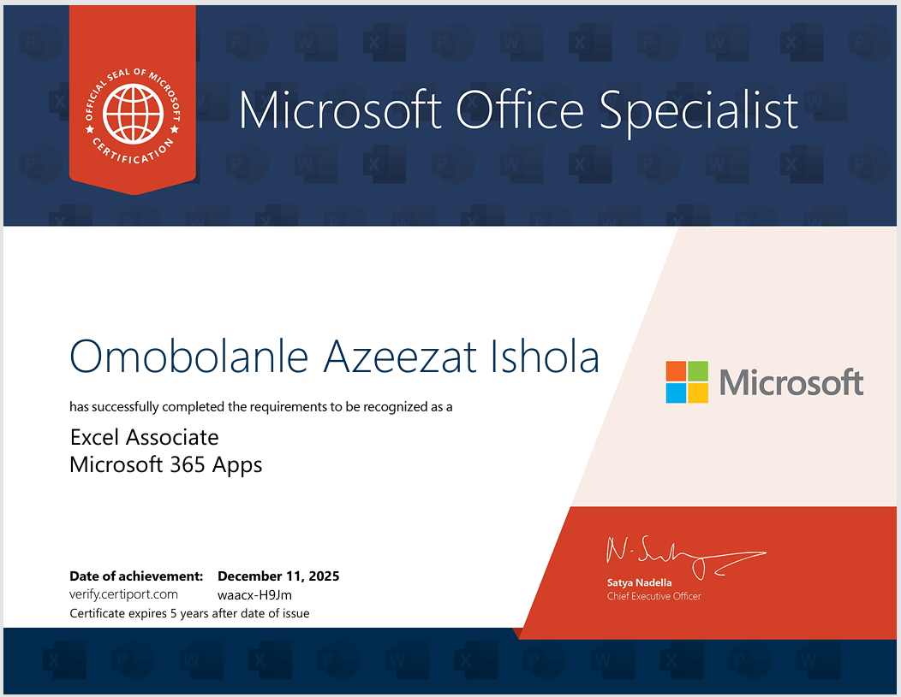
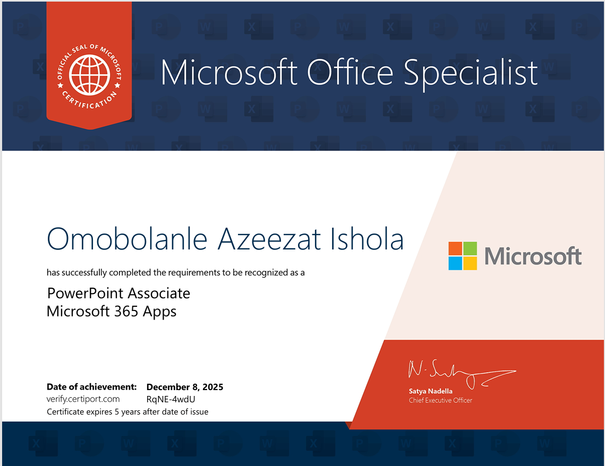
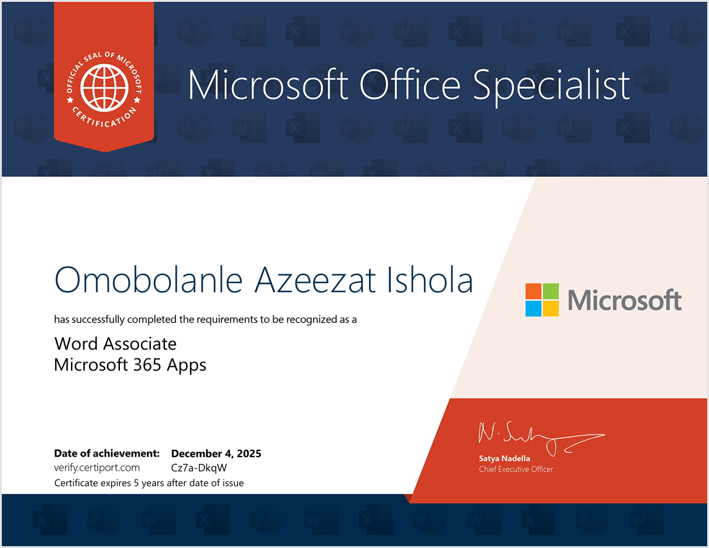

MY PROFESSIONAL DEVELOPMENT
Skills & Experience
My academic studies, professional experience and independent learning have helped me develop a combination of technical, analytical and interpersonal skills. I am always looking for opportunities to expand my knowledge and apply what I learn in practical environments.
Education & Qualifications
Business Information Technology
University | Currently studying
Developing knowledge of how technology supports business operations, decision-making and organisational processes. My studies have introduced me to areas including business intelligence, data analysis and web development.
BTEC Level 3 Information Technology
Completed
Developed an understanding of IT systems, digital technologies and the use of technology to solve practical problems.
BTEC Level 3 Business
Completed
Gained knowledge of business operations, marketing, management and the factors that influence business performance.
Certifications
I have achieved Microsoft Specialist certification through examinations in the following applications.

Microsoft Excel
Microsoft Specialist Certification

Microsoft PowerPoint
Microsoft Specialist Certification

Microsoft Word
Microsoft Specialist Certification
Technical Skills
Microsoft Excel
Intermediate knowledge of spreadsheets, data organisation and analysis.
Power BI
Experience importing and cleaning data, creating visualisations and developing interactive dashboards.
SQL
Developing skills in querying databases, filtering records and retrieving information.
Python
Developing programming knowledge and exploring how Python can be used for data-related tasks.
HTML, CSS & Javascript
Learning to create and style responsive web pages using structured code.
Git & GitHub
Using version control to manage, organise and share development projects.
Professional Experience
Contact Centre Agent – ESP Group
Customer Service
Supporting customers with enquiries, identifying problems and providing appropriate solutions. This role has helped me strengthen my communication, patience and problem-solving skills.
Sales Assistant – Dunelm
Retail
Assisted customers with purchases, till transactions and Click & Collect orders. Developed the ability to work efficiently, manage competing priorities and deliver positive customer experiences.
Customer Service – Amaz Ventures
Retail & Business Support
Supported daily business activities, assisted customers and handled enquiries independently. Developed confidence, initiative and the ability to resolve customer issues.